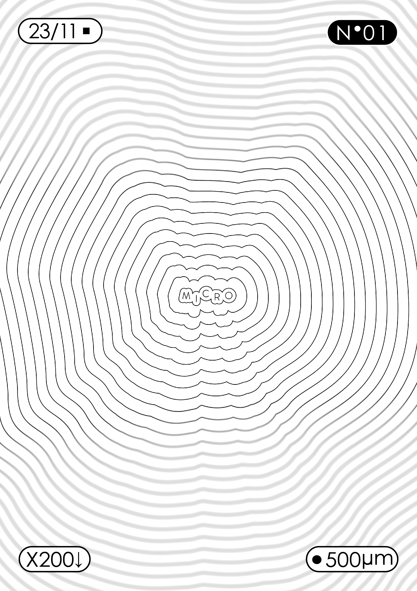
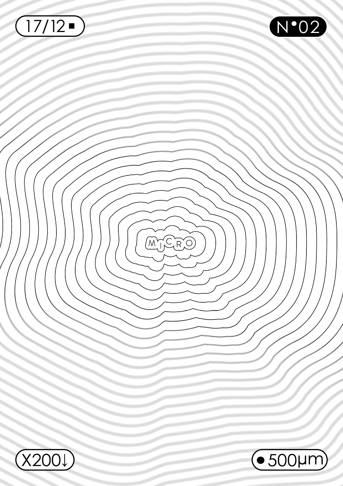
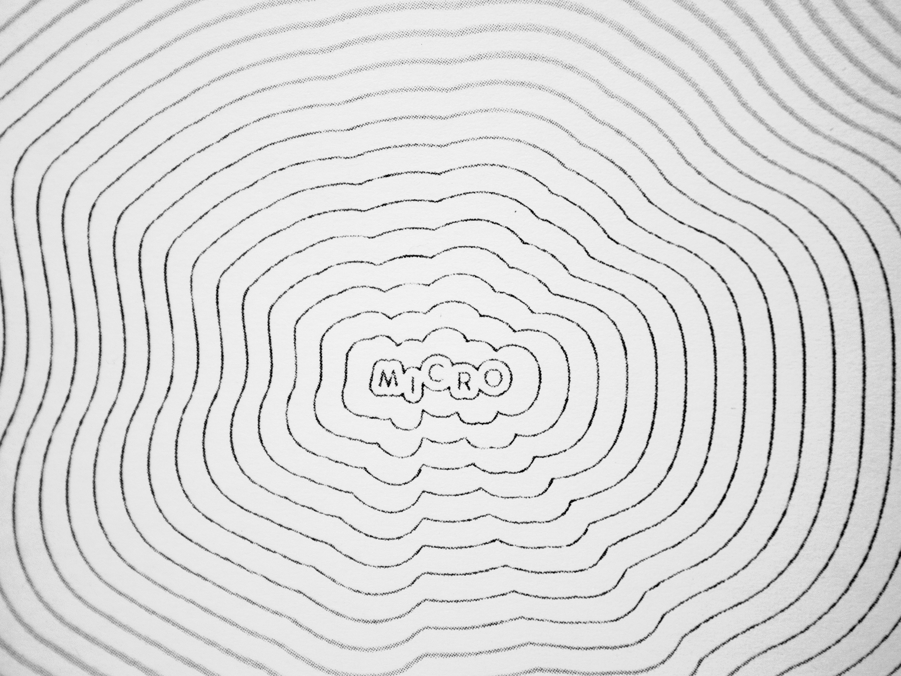

Micro est une série de mini fanzines de photographie composés de 8 pages, le titre renvoie à son petit format (7,4x10,5cm).
Quand j'ai commencé à faire des séries de photos je voulais essayer d'en faire quelque chose de plus. Très vite j'ai fait des essais de Fanzine et cela m'a plu par sa simplicité, en effet chaque numéro du fanzine est imprimé sur une page A4 et nécessite juste d'être plié et coupé pour être assemblé, sans colle ni agrafe.
Les séries ont des sujets et des thèmes différents d'un numéro à l'autre mais ont toujours comme point commun le noir et blanc qui en plus de son style permet une impression plus économique.
- 


- 


- 